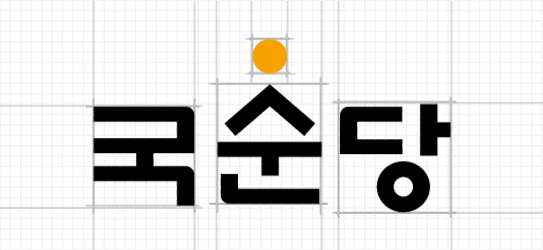

> 기업정보 > CI
CI
CORPORATE IDENTITY
워드마크
워드마크는 국순당을 상징하는 대표적인 시각 표현물로서 국순당 C.I.S(Corporate Identification Standards)의 핵심적인 기본요소

JPG 다운로드
AI 다운로드
{kind=link}
의미
-
- 형상
- ‘해가 떠오르면 음달과 양달이 생긴다’ 는 음양의 원리에서 착안하여 개발된 새로운 C.I는 산으로 연상되는 ‘ㅅ’ 과, 하늘로 연상되는 ‘ㅇ’ 의 조합이 주 요소로서, 땅과 하늘의 조화 즉, 음양의 조화라는 전통사상을 그 근본에 두고있으며, 음양의 근본에 인간이 있음으로 해서 고객이 주 인이 되는 기업철학과 인간중심사상을 상징합니다.
땅의 수용적, 모성적,태생적 이미지와 하늘이 추진적, 능동적, 현실적 이미지의 조합은 전통문화의 계승과 현대화라는 기업이념과 세계를 향해 나아가는 힘찬 움직임을 바탕으로 국순당의 미래와 희망을 제시해주고 있습니다.
-
- 색상
- Chrome Yellow [Pantone 144 C]
세상의 중심과 고귀함, 존중을 상징하는 동양적 색채의미를 담고 있습니다. 또한 한국의 시골집이나 토담에서 볼 수있는 한국인의 정서에 친숙한 황토흙과 햇살의 따사로운 기운, 그리고 잘 익은 곡식의 풍요를 의미합니다. - Black [Pantone Black C]
옛 선비의 글씨에서 볼 수 있는 정직과 강직을 상징하여, Chrome Yellow와의 색상 대비로 강한 시각적 임팩트와 주목성을 주고 있습니다.
-
- 서체
- 한글 고유의 훈민정음체를 바탕으로 현대적으로 조형된 서체는 단단한 글자의 골격과 안정된 서체 균형 속에 부드러운 곡선을 가미하여 한국 고유의 전통 계승, 고객과의 신뢰와 믿음을 표현하고 있습니다.
전용색상
전용색상의 효과적인 사용을 위해서는 세심한 주의를 요하는 인쇄방법, 잉크의 농도 종이의 지질 등을 검토하여 메뉴얼이 정한 표준 색상을 유지해야 하며, 사인용 비닐소재, 실크스크린, 페이트 도료, 아크릴 소재 등에 있어서도 반드시 표준 색상을 기준으로 한 별색 규정의 색상을 지켜야 한다.
-
- 국순당 노란색
- PANTONE 144C
-
- 검정색
- PANTONEBLACK C
-
- 국순당 검정색
- K 100%
-
- 국순당 미색
- PANTONE 4685 C
-
- 국순당 자주색
- PANTONEBLACK 505 C
메인컬러
서브컬러
색상활용
워드마크의 색상은 인쇄매체와 바탕색에 따라 표현을 달리한다. 위는 충분한 명시성을 확보하기 위해 제안된 워드마크 색상활용의 적합한 예시이다. 패턴이나 장식적 목적의 활용에 의한 특별한 경우에 작은 명도 차이(바탕과 워드마크의 작은 톤 차이)를 이용한 활용도 가능하다.
워드마크 2색 표현
워드마크 검정색 표현
워드마크 노란색 표현